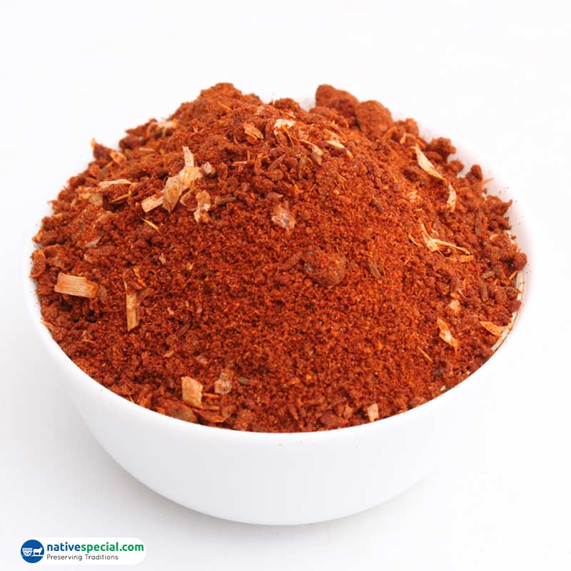
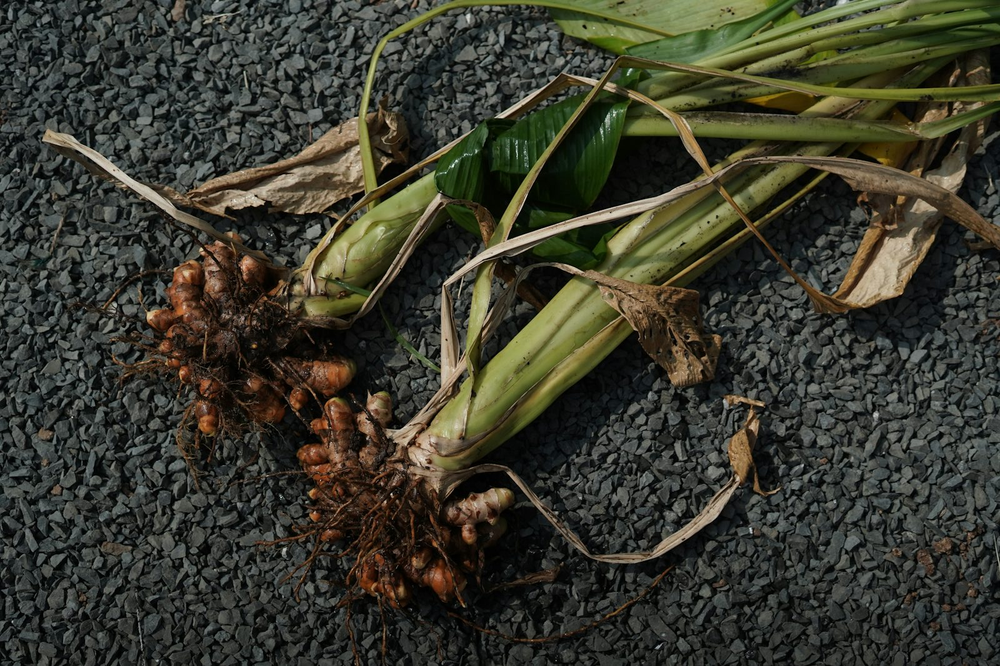
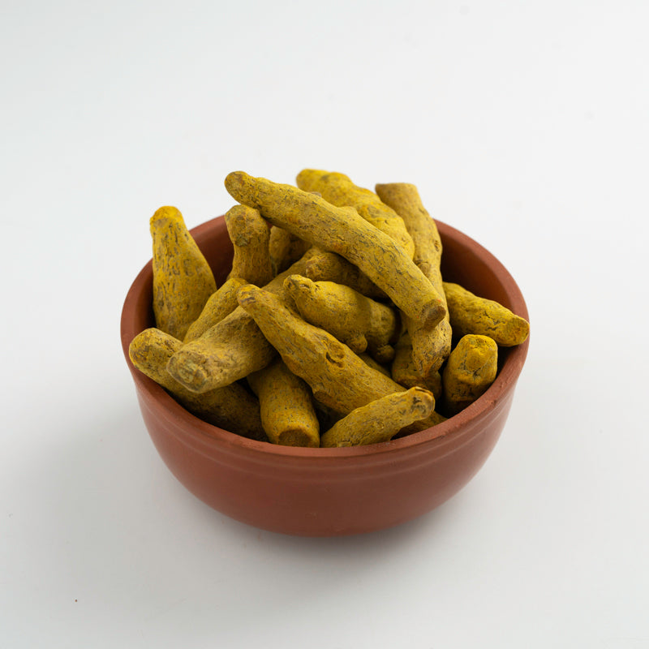

Karam added to the rangeThe new karam visual helps the site reflect a broader spice offering instead of turmeric alone.
Discover a warmer spice storefront built around turmeric roots, turmeric powder, and karam blends. Bhumiputra Farms now presents the new brand identity, founder presence, and a direct WhatsApp-friendly buying path.

Bhumiputra Farms combines traditional warmth, clean presentation, and a product mix built around turmeric and karam.
Explore the story, browse the catalog, and move directly into a WhatsApp conversation for orders and enquiries.

Founder story
Bhumiputra Farms is now positioned around Sanjana Reddy, a grounded farm story, and a growing product line that includes both turmeric and karam. The updated site keeps the tone warm while making the buying path much clearer.
Farm and product imagery
The refreshed gallery now supports the Bhumiputra Farms identity with visuals that connect the founder, the harvest, turmeric, and karam in one consistent presentation.

Featured products
Explore the product range here, then move into the store for weights, pricing, and direct ordering through WhatsApp.
A clean everyday turmeric powder option for household cooking and repeat orders.

Whole roots for traditional home use, direct grinding, and premium pantry stocking.
A bold, ready-to-cook karam option that expands the site beyond turmeric-only positioning.
A simple combined order path for customers who want staple turmeric and karam in the same cart.
"Farm-led flavor, grounded trust, and a simpler path from product discovery to WhatsApp ordering."
Bhumiputra FarmsBuild status
The site now highlights what matters most for this client: founder visibility, turmeric plus karam storytelling, and a much more direct path into live conversations for orders.
Get in touch
Visitors can explore the story, review turmeric and karam options, and message the Bhumiputra Farms team directly for orders, questions, and bulk requirements.
Farm to kitchen
From the new logo to the WhatsApp flow, the site now presents Bhumiputra Farms as a more confident, founder-led spice brand.